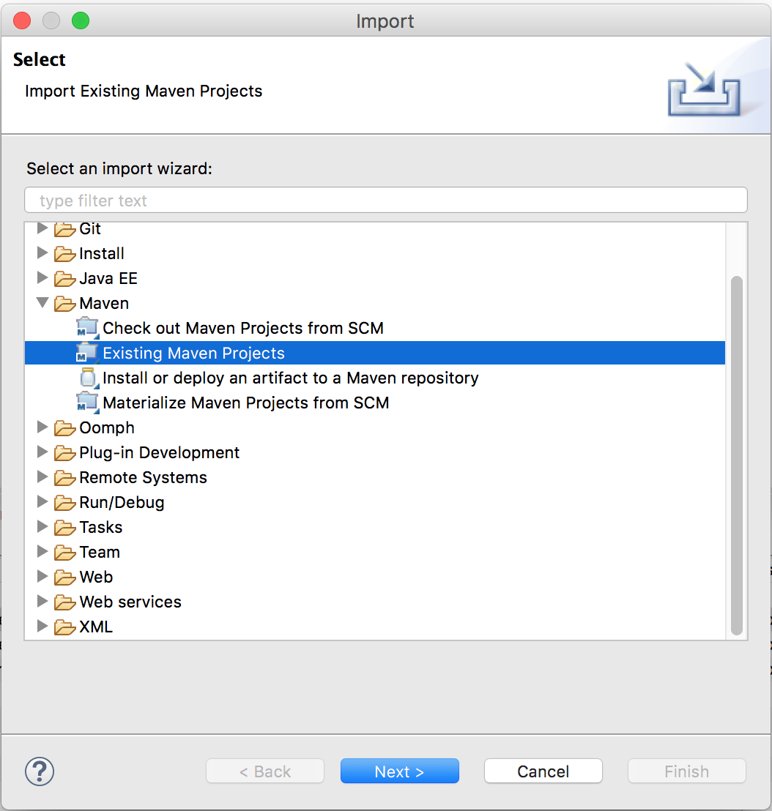

v1.0.0-SNAPSHOT
GeoWave Developer Guide 
Introduction
What is GeoWave
GeoWave is an open-source library for storage, index, and search of multi-dimensional data on top of sorted key-value datastores and popular big data frameworks. GeoWave includes specific tailored implementations that have advanced support for OGC spatial types (up to 3 dimensions), and both bounded and unbounded temporal values. Both single and ranged values are supported on all axes. GeoWave’s geospatial support is built on top of the GeoTools project extensibility model. This means that it can integrate natively with any GeoTools-compatible project such as GeoServer and UDig, and can ingest GeoTools compatible data sources.
GeoWave provides out-of-the-box support for distributed key/value stores, as necessary for mission needs. The latest version of GeoWave supports Apache Accumulo and Apache HBase stores, though additional data stores can be implemented as requested or needed.
This guide serves the purpose of focusing on the development side of GeoWave capabilities as well as assisting developers with the GeoWave code surroundings.
-
GeoWave Capabilities
-
Add multi-dimensional indexing capability to Apache Accumulo and Apache HBase
-
Add support for geographic objects and geospatial operators to Apache Accumulo and Apache HBase
-
Provide a GeoServer plugin to allow geospatial data in Accumulo and HBase to be shared and visualized via OGC standard services
-
Provide Map-Reduce input and output formats for distributed processing and analysis of geospatial data
-
-
Geospatial software plugins include the following:
Basically, GeoWave is working to bridge geospatial software with distributed compute systems and attempting to do for distributed key/value stores what PostGIS does for PostgreSQL.
Origin
GeoWave was developed at the National Geospatial-Intelligence Agency (NGA) in collaboration with RadiantBlue Technologies and Booz Allen Hamilton. The government has unlimited rights and is releasing this software to increase the impact of government investments by providing developers with the opportunity to take things in new directions. The software use, modification, and distribution rights are stipulated within the Apache 2.0 license.
Intent
Pluggable Backend
GeoWave is intended to be a multidimensional indexing layer that can be added on top of any sorted key-value store. Accumulo was chosen as the initial target architecture, and support for HBase has been added as well. Any datastore which allows prefix based range scans should be straightforward extensions.
Modular Framework Design
The GeoWave architecture is designed to be extremely extensible with most of the functionality units defined by interfaces and with default implementations of these interfaces to cover most use cases. GeoWave allows for easy feature extension and platform integration – bridging the gap between distributed technologies and minimizing the learning curve for developers. The intent is that the out-of-the-box functionality should satisfy 90% of use cases, but the modular architecture allows for easy feature extension as well as integration into other platforms.
Self-Describing Data
GeoWave stores the information needed to manipulate data, such as configuration and format, in the database itself. This allows software to programmatically interrogate all the data stored in a single or set of GeoWave instances without needing bits of configuration from clients, application servers, or other external stores.
Scalable
GeoWave is designed to operate either in a single-node setup or it can scale out as large as needed to support the amount of data and/or processing resources necessary. By utilizing distributed computing clusters and server-side fine grain filtering, GeoWave is fully capable of performing interactive time and/or location specific queries on datasets containing billions of features with 100 percent accuracy.
Overview
For GeoWave users, the primary method of interfacing with GeoWave is through the various Command-Line Interface (CLI) commands and options. Users will use GeoWave to store, index, or search multi-dimensional data in a key-value datastore.

This typically involves these four steps:
-
Configure
Set up/configure a datastore or index on GeoWave for re-use across various operations as needed.
-
Ingest/Index
Ingest, or Index, data into a specific store (e.g., Accumulo, HBase)
-
Process
Process data using a distributed processing engine (e.g. MapReduce, Spark)
-
Query/Discover
Search/Query or Discover data ingested, indexed, or processed/transformed through GeoWave operations. A common data discovery tool used is GeoServer, which interfaces with GeoWave through the plugin, for interfacing with the selected datastore, e.g., Accumulo or HBase.
GeoWave uses tiered, gridded, Space Filling Curves (SFCs) to index data into your desired key-value store. The indexing information is stored in a generic key structure that can also be used for server-side processing. This architecture allows query, processing, and rendering times to be reduced by multiple orders of magnitude.

If there are questions or issues encountered, or topics of interest that could be expounded on, please create an issue within the GeoWave project GitHub page.
Assumptions
Prior to setting up a development environment surrounding the GeoWave project, this guide assumes that the following components are installed. Because of the continuous changes occurring to these components, installing, and maintaining, extensive operational capabilities around these components is outside the scope of this document.
Development & Building
In order to build and/or perform development using the GeoWave source, the following components are required:
-
Java Development Kit (JDK) (>= 1.8)
Requires JDK v1.8 or greater
Download from the Java downloads site. The OracleJDK is the most thoroughly tested but there are no known issues with OpenJDK.
-
Reference online material at Git SCM Site.
For a complete reference guide for installing and using Git, please reference chapters in the online Pro Git book.
-
Requires a version of Maven >= 3.2.1
For a reference guide for getting started with Maven, please reference the online Maven Getting Started Guide.
GeoWave has a dependency on the following libraries - handled through Maven:-
Uzazygezen - link:https://code.google.com/p/uzaygezen/
-
GeoTools - link:http://www.geotools.org/
-
Log4J - link:http://logging.apache.org/log4j/1.2/
-
-
Java Advanced Imaging and Java Image I/O
Both are required to be installed on the GeoServer instance(s) as well as on the Accumulo nodes. The Accumulo support is only required for certain functions (distributed rendering), so this may be skipped in some cases.
External Components
Depending on the environment components that are being developed towards and/or tested against, e.g., requirements, datastores, indices, etc., some external components will be beneficial. While this information is outside the scope of this document, you can find these requirements in the GeoWave User Guide.
Development Setup
Retrieving the Code
Users have two options for retrieving the geowave code: either by directly downloading the code repository in zip archive or cloning the repository, both are accessed directory through GitHub.
Downloading the Code as Zip Archive
This option is for users who do not intend to contribute to the GeoWave project source, and simply want to collaborate as a read-only user, and still build the code and run in an environment. This is by far the simplest and most direct way to access the code.
To download a read-only version of the code repository:
-
Open a web browser and navigate to the GeoWave GitHub repository where the different projects and latest changes can be viewed.
-
If interested in a particular branch, select the branch of choice. Otherwise, leave on the default master branch for the latest tested changes.
-
Locate the green “Clone or download” button near the top right of the file navigation section.

-
Expand the “Clone or download” pane by clicking on the green button labeled "Clone or download".

-
Download the code by clicking on the “Download ZIP” button. Depending on browser settings, the code will either download automatically to the user account’s downloads directory or a prompt will ask for the download destination. If the zip file is automatically downloaded to the downloads directory, manually move the zip file to the intended destination directory.
-
Navigate on the system to the path where the zip file is located. Once you unzip the downloaded GeoWave repository source, it is ready for use and building locally.
Cloning the GeoWave Git Repository
For users who intend to either wish to propose contributions to the GeoWave project source, or simply want a clean way to keep the code up-to-date with the latest committed changes from the GeoWave team, the GeoWave code source can be cloned through the Git command line interface. Cloning the repository enables a simplistic interface to where a user can easily compare their current codebase against the latest code in the master (or a selected branch) repository.
-
Navigate to the system directory where the GeoWave project code is to be located. The code will be downloaded to a parent folder named “geowave”. Ensure that there is not already an existing folder titled “geowave”.
-
Clone the git repository by opening a terminal and running the command:
$ git clone https://github.com/locationtech/geowave.git|
If you do not need the complete history, and want to speed up the clone, you can limit the depth of the checkout process by appending “-depth NUM_COMMITS” to the clone command above. |
Terminal activity should appear, similar to below, as the repository is cloned. Note that this can typically take a few minutes.
Cloning into 'geowave'... remote: Counting objects: 1311924, done. remote: Compressing objects: 100% (196/196), done. remote: Total 1311924 (delta 68), reused 0 (delta 0), pack-reused 1311657 Receiving objects: 100% (1311924/1311924), 784.52 MiB | 6.18 MiB/s, done. Resolving deltas: 100% (1159959/1159959), done.
-
Confirm that the repository clone was successful by ensuring that the GeoWave directory was created. Running the command “ls –l | grep geowave” should yield a result similar to below.
$ ls -l | grep geowave
drwxr-xr-x 22 {user} {domain group} 748 Mar 16 10:41 geowave-
Confirm that the GeoWave contents were properly downloaded and cloned by examining the contents of the 'geowave' directory. Note that the folder entries should look closely identical to the listings on the GitHub site
$ ls -lah geowave
total 144
drwxr-xr-x 22 {user} {domain group} 748B Mar 16 10:41 .
drwx------+ 9 {user} {domain group} 306B Mar 16 10:33 ..
drwxr-xr-x 12 {user} {domain group} 408B Mar 16 10:44 .git
-rw-r--r-- 1 {user} {domain group} 710B Mar 16 10:35 .gitattributes
-rw-r--r-- 1 {user} {domain group} 147B Mar 16 10:35 .gitignore
drwxr-xr-x 6 {user} {domain group} 204B Mar 16 10:36 .metadata
-rw-r--r-- 1 {user} {domain group} 3.1K Mar 16 10:35 .travis.yml
drwxr-xr-x 7 {user} {domain group} 238B Mar 16 10:35 .utility
-rw-r--r-- 1 {user} {domain group} 11K Mar 16 10:35 LICENSE
-rw-r--r-- 1 {user} {domain group} 724B Mar 16 10:35 NOTICE
-rw-r--r-- 1 {user} {domain group} 8.0K Mar 16 10:35 README.md
drwxr-xr-x 6 {user} {domain group} 204B Mar 16 10:35 analytics
drwxr-xr-x 9 {user} {domain group} 306B Mar 16 10:35 core
drwxr-xr-x 10 {user} {domain group} 340B Mar 16 10:37 deploy
drwxr-xr-x 7 {user} {domain group} 238B Mar 16 10:42 dev-resources
drwxr-xr-x 6 {user} {domain group} 204B Mar 16 10:37 docs
drwxr-xr-x 9 {user} {domain group} 306B Mar 16 10:37 examples
drwxr-xr-x 7 {user} {domain group} 238B Mar 16 10:35 extensions
-rw-r--r-- 1 {user} {domain group} 31K Mar 16 10:35 pom.xml
drwxr-xr-x 6 {user} {domain group} 204B Mar 16 10:35 services
drwxr-xr-x 10 {user} {domain group} 340B Mar 16 10:38 testThe GeoWave source is now ready for use and building locally
Building the Source
Tools Framework Overview
A plugin framework (using Service Provider Interface (SPI)-based injection) is provided with several input formats and utilities supported out of the box. First, we’ll show how to build and use the built-in formats and then describe how to create a new plugin.
Building
GeoWave will shortly be available in Maven central (for tagged releases) but until then, or to get the latest features, building GeoWave from source is the best bet.
Building GeoWave
To build the project source, navigate to the directory into which the GeoWave code was downloaded. Using Maven from the command line, run the following command in a local terminal:
$ mvn clean install (1)| 1 | You can speed up the build by skipping tests by adding -Dfindbugs.skip=true -Dformatter.skip=true -DskipITs=true -DskipTests=true |
|
Integration Tests: Windows Integration tests are currently not working on Windows out of the box. If you install cygwin and set the environmental variable CYGPATH to the location of the cygpath binary provided by cygwin to make it work. |
Upon executing the command above, you should see a terminal output beginning with similar code below. Maven will build all the projects in the repository, so this will take a few minutes to complete.
[INFO] Scanning for projects... [INFO] ------------------------------------------------------------------------ [INFO] Reactor Build Order: [INFO] [INFO] GeoWave Parent POM [INFO] GeoWave Core Parent POM [INFO] GeoWave CLI [INFO] GeoWave Index [INFO] GeoWave Store [INFO] GeoWave MapReduce [INFO] GeoWave Ingest Framework [INFO] GeoWave Spatial and Temporal Support [INFO] GeoWave Extensions [INFO] Geowave Vector Adapter [INFO] Geowave Raster Adapter [INFO] GeoWave Analytics Parent POM [INFO] GeoWave Analytics API [INFO] GeoWave MapReduce Analytics [INFO] GeoWave Spark Analytics [INFO] GeoWave Deployment Configurations [INFO] GeoWave Documentation [INFO] GeoWave Accumulo [INFO] GeoWave Hbase [INFO] GeoWave Examples [INFO] GeoWave BigTable [INFO] GeoWave GeoLife Format Support [INFO] GeoWave Raster Format [INFO] GeoWave Vector Format [INFO] GeoWave GPX Format [INFO] GeoWave T-Drive Format [INFO] GeoWave GDELT Format Support [INFO] GeoWave Avro Format [INFO] GeoWave Twitter Format Support [INFO] geowave-format-4676 [INFO] GeoWave Services Parent POM [INFO] GeoWave Services API [INFO] geowave-service-4676 [INFO] GeoWave Debug Commandline Tools [INFO] Geowave GeoServer Commandline Tools [INFO] Geowave OSM Commandline Tools [INFO] GeoWave LandSat8 Operations [INFO] GeoWave Java Client for REST services [INFO] GeoWave REST Services WebApp [INFO] GeoWave Integration Tests [INFO] [INFO] ------------------------------------------------------------------------ [INFO] Building GeoWave Parent POM 1.0.0-SNAPSHOT [INFO] ------------------------------------------------------------------------
Once this is completed, the compiled artifacts (jar, war, etc.) are “installed” into your local repository for each respective project. The compiled artifacts are also available in each project target directory.
Maven dependencies
Required repositories not in Maven Central have been added to the parent POM, specifically the cloudera and opengeo repositories.
Docker Build Process
We have support for building both the GeoWave jar artifacts and RPMs from Docker containers. This capability is useful for a number of different situations:
-
Jenkins build workers can run Docker on a variety of host-operating systems and build for others
-
Anyone running Docker will be able to duplicate our build and packaging environments
-
Will allow us to build on existing container clusters instead of single purpose build VMs
If building artifacts using Docker containers interests you, check out the README in deploy/packaging/docker.
Creating Eclipse Projects
In order to facilitate a more complete development environment, we now need to get the GeoWave source code into an Integrated Development Environment (IDE). This section will walk you through how to import Maven projects into the Eclipse IDE.
|
There are several IDEs available, though this guide will assume use of Eclipse. If you are developing in a different IDE than Eclipse, there are likely guides on the internet to guide you through converting a Maven project into your IDE. |
Using the Eclipse Maven M2Eclipse plugin, we can import maven projects into eclipse, and eclipse will automatically resolve/download dependencies listed in the pom.xml file for each project.
|
If any project pom.xml dependencies are changed/updated, Eclipse will automatically update the project and any downstream changes to related/depependent projects. |
-
Import the Maven GeoWave projects into the Eclipse workspace.
-
Within Eclipse, select File → Import.
 Figure 5. Eclipse File Import Menu
Figure 5. Eclipse File Import Menu -
From the "Import" window, select the option under "Maven" for "Existing Maven Projects" and select the "Next" button.
Figure 6. Existing Maven Projects Wizard -
From the "Import Maven Projects" window, select the “Browse” button and navigate to the root directory where the GeoWave source is located on the file system. Once found, select the geowave directory and select the "Open" button.
-
Within the "Import Maven Projects" window, the “Projects” pane should now be populated with all of the GeoWave projects. Select the "Finish" button to exit.
-
Upon returning to the workspace in Eclipse, the Project Explorer pane should now be populated with all of the GeoWave projects.
 Figure 7. Eclipse Workspace
Figure 7. Eclipse Workspace
-
Packaging the Source
This section is intended to outline how to package the various GeoWave builds into deployable jar files.
Packaging CLI Tools Framework
When the GeoWave code is ready for packaging and deployment, the code can be easily packaged up using Maven by running the command below from the GeoWave home directory:
$ mvn package -P geowave-tools-singlejar (1)| 1 | You can speed up the build by skipping tests by adding -Dfindbugs.skip=true -Dformatter.skip=true -DskipITs=true -DskipTests=true |
This process will take a minute or two to build.
Once the packaging process has completed, the geowave-tools jar is now packaged in the deploy/target directory.
When packaged for installation, there will be a wrapper alias command named 'geowave' that will be installed in $PATH.
In a development environment where this script has not been installed, a directory containing the tools jar can be created with any needed plugin jars and used with something like the following command:
java -cp "$DIR/* <operation> <options>Alternatively, if operating in an *nix-based environment, adding the command as an alias to the user profile can be performed by following these steps:
-
Open the user account profile script for editing.
$ vi ~/.profile [Press Enter] -
Add an alias to the profile for geowave. The alias will be structured similar to that below.
alias geowave="java -cp $GEOWAVE_HOME/deploy/target/geowave-deploy-1.0.0-SNAPSHOT-tools.jar org.locationtech.geowave.core.cli.GeoWaveMain"Replace $GEOWAVE_HOME with the value of the GeoWave home directory or create an environment variable for that name and value.
-
Save and close editor.
:q! [Press Enter] -
Update profile in current environment.
$ source ~/.profile [Press Enter]
At this point, you can now run GeoWave Command Line Instructions. For a full list of these commands, please see the GeoWave CLI Appendix.
How to Contribute
GeoWave is an open source project and we welcome contributions from the community.
Pull Requests
Pull requests from non locationtech member must be done though a forked repository.
To create a new fork, just click the the "Fork" button at the top of the GeoWave GitHub page. You can now submit pull requests from your working branch on your fork directly to the master branch on locationtech.
GeoWave uses a Maven plugin formatter to keep all of our code standardized. You should run a Maven install immediately prior to committing and pushing changes.
Prior to submitting a pull request, please squash down your commits into one. This will help keep our commit history clean and will cut down on "in progress commits" that don’t relay any helpful information in the future.
All pull request contributions to this project will be released under the Apache 2.0 license.
Software source code previously released under an open source license and then modified by NGA staff is considered a "joint work" (see 17 USC 101); it is partially copyrighted, partially public domain, and as a whole is protected by the copyrights of the non-government authors and must be released according to the terms of the original open source license.
Architecture
Overview
The core of the GeoWave architecture concept is getting data in (Ingest), and pulling data out (Query). There are also two types of data persisted in the system: feature data and metadata. Feature data is the actual set of attributes and geometries that are stored for later retrieval. Metadata describes how the data is persisted in the database. The intent is to store the information needed for data discovery and retrieval in the database. This means that an existing data store isn’t tied to a bit of configuration on a particular external server or client but instead is “self-describing.”
Persistence
Three things are required to load data into a working accumulo cluster: an index, feature type, and supported source format.
Source Formats
Leveraging the GeoTools infrastructure, GeoWave supports ingesting any DataSource that GeoTools supports. Currently supported data types include:
-
arcgrid
-
arcsde
-
db2
-
raster formats
-
geotiff
-
grassraster
-
gtopo30
-
imageio-ext-gdal
-
imagemoasaic
-
imagepyramid
-
JP2K
-
-
Database “jdgc-ng” support
-
h2
-
mysql
-
oracle
-
postgis
-
spatialite
-
sqlserver
-
-
postgis
-
property file
-
shapefile
-
dfs
-
edigeo
-
geojson
-
wfs
For a current list of supported formats, refer to the GeoTools User Guide. Reference the version of GeoTools that GeoWave was built against (currently 18.1).
Indexes
The core engine to quickly retrieve data from GeoWave is a SFC-based index. This index can be configured with several different parameters:
-
number of levels
-
number of dimensions
-
cardinality of each dimension
-
dimension type (bounded/unbounded)
-
value range of each dimension
More on each of these properties will be described later, but the intent of this list is to provide a notion of what type of configuration information is persisted.
In order to insert data in a datastore, the configuration of the index has to be known. The index is persisted in a special table and is referenced back via table name to a table with data in it. Therefore, queries can retrieve data without requiring index configuration. There is a restriction that only one index configuration per table is supported, i.e., you can’t store data on both a 2-dimensional and 3-dimensional index in the same table. (You could store 2-dimensional geometry types in a 3-dimensional index though).
Adapters
In order to store geometry, attributes, and other information, a format is required that describes how to serialize and deserialize the data. GeoWave provides an interface that handles the serialization and deserialization of feature data. A default implementation supporting the GeoTools simple feature type is included by default. More on this specific implementation, as well as the interface, will be detailed later in this document. A pointer to the Java class, expected to be on the classpath, is stored in the Adapter persistence table. This is loaded dynamically when the data is queried and the results are translated to the native data type.
Feature Serialization

GeoWave allows developers to create their own data adapters. Adapters not only determine how the data is actually stored (serialization/deserialization), but also contain a hierarchy of attribute types. The reason for this hierarchy has to do with extensibility vs. optimization. A data adapter could theoretically take a dependency on ffmpeg, store the feature as metadata in a video stream, and persist that value to the database. All questions of sanity of this solution aside, there are some additional specific issues with the way fine grain filtering is done, specifically due to the iterators.
Based on this, our goal was to minimize the code and standardize on as few iterators as possible. This conflicted with the desire to allow maximum flexibility with arbitrary DataAdapters. A middle ground was found and this hierarchy was created. Some standardization was put in place around how certain data types would be stored and serialized, but a "native data" portion was still left in place for arbitrary data. The caveat is that native data cannot be used in distributed (iterator based) filtering - only in client side filtering.
Primary Index Data
These are sets of data that are also used to construct the primary index SFC. They will typically be geometry coordinates and optionally time, but could be any set of numeric values (think decomposed feature vectors, etc.). They cannot be null.
Common Index Data
These are a collection of attributes. There can be any number of attributes but they must conform to the NumericDimensionField interface. The attribute type must have a FieldReader and a FieldWriter that is within the classpath of the tablet servers. GeoWave provides a basic implementation for these attribute types:
Boolean |
Byte |
Short |
Float |
Double |
BigDecimal |
Integer |
Long |
BigInteger |
String |
Geometry |
Date |
Calendar |
The values that are not part of the primary index can be used for distributed secondary filtering and can be null. The values that are associated with the primary index will be used for fine-grained filtering within an iterator.
Native Data
These can be literally anything. No distributed filtering can be performed on this data except for Accumulo’s visibility filter, but the client-side filtering extensibility point can still be used if necessary. The Data Adapter has to provide methods to serialize and deserialize these items in the form of Field Readers and Writers, but it is not necessary to have these methods on the classpath of any nodes.
Field Writers/Readers
These are type specific implementations used by org.locationtech.geowave.core.store.adapter.DataAdapter to tell GeoWave how to serialize or deserialize information of a certain type. The default implementations are included in the distributed filter iterators. This is what drives the type requirements listed above in the Common Index Data section.
Writing Data
When writing data, writing implementation classes should implement the Writable interface.
When writing vector data, GeoWave provides the default vector writable implementation, the org.locationtech.geowave.adapter.vector.FeatureWritable class.
This class is used by org.locationtech.geowave.adapter.vector.FeatureDataAdapter to persist org.opengis.feature.simple.SimpleFeature and its org.opengis.feature.simple.SimpleFeatureType. The attribute types of the feature must be understood before the feature can be deserialized so therefore each org.opengis.feature.simple.SimpleFeature serializes its type.
|
This class caches feature type information. If the feature type changes, then the cache should be emptied using the clearCache() method. |
When writing raster data, GeoWave provides the default raster writable implementation, the org.locationtech.geowave.adapter.raster.adapter.GridCoverageWritable class.
This class is used by GridCoverageDataAdapter, e.g., org.locationtech.geowave.adapter.raster.adapter.RasterDataAdapter, to persist org.opengis.coverage.grid.GridCoverage. The adapter has information regarding the sample model and color model so all that is necessary to persist is the buffer and the envelope.
Key Structure

The above diagram describes the default structure of entries in the data store. The Index ID comes directly from the tiered SFC implementation. We do not impose a requirement that Data IDs are globally unique but they should be unique for the adapter. Therefore, the pairing of Adapter ID and Data ID define a unique identifier for a data element. The lengths are stored within the Row ID as 4 byte integers. This enables fully reading the Row ID because these IDs can be of variable length. The number of duplicates is stored within the Row ID as well to inform the de-duplication filter whether this element needs to be temporarily stored in order to ensure no duplicates are sent to the caller. The Adapter ID is within the Row ID to enforce unique Row IDs as a whole row iterator is used to aggregate fields for the distributable filters. The Adapter ID is also used as the column family as the mechanism for adapter-specific queries to fetch only the appropriate column families.
Statistics
Adapters provide a set of statistics stored within a statistic store. The set of available statistics is specific to each adapter as well as the set of attributes for those data items managed by the adapter. Statistics include:
-
Ranges over an attribute, including time
-
Enveloping bounding box over all geometries
-
Cardinality of the number of stored items
-
Histograms over the range of values for an attribute
-
Cardinality of discrete values of an attribute
Statistics are updated during data ingest and deletion. Range and bounding box statistics reflect the largest range over time. Those statistics are not updated during deletion. Statistics based on cardinality are updated upon deletion.
Re-computation of statistics is required in three circumstances:
-
As indexed items are removed from the adapter store, the range and envelope statistics may lose their accuracy if the removed item contains an attribute that represents the minimum or maximum value for the population.
-
New statistics added to the statistics store after data items are ingested. These new statistics do not reflect the entire population.
-
Software changes invalidate prior stored images of statistics.
Statistics retain the same visibility constraints as the associated attributes. Thus, there is a set of statistics for each unique constraint. The statistics store answers each statistics inquiry for a given adapter with only those statistics matching the authorizations of the requester. The statistics store merges authorized statistics covering the same attribute.


Ingest
Overview
In addition to the raw data to ingest, the ingest process requires an adapter to translate the native data into a format that can be persisted into the data store. Also, the ingest process requires an index which is a definition of all the configured parameters that define how data is translated to Row IDs (how it is indexed) and what common fields need to be maintained within the table to be used by fine-grained and secondary filters.

The logic within the ingest process immediately ensures that the index and data adapter are persisted within the Index Store and the Adapter Store to support self-described data discovery. In-memory implementations of both of these stores are provided for cases when connections to third-party datastores (e.g., Accumulo, HBase) are undesirable in the ingest process, such as ingesting bulk data in a Map-Reduce job. Then the flow determines the set of Row IDs that the data will need to be inserted into. Duplication is essential under certain circumstances and therefore data may be inserted in multiple locations, e.g., polygons that cross the dateline or date ranges that cross binning boundaries such as December 31-January 1 when binning by year. De-duplication is always performed as a client filter when querying the data. This will be combined with the actual data in a persistable format, after a translation has been performed by the adapter to create a set of mutations.
There is a Writer interface that the data store’s AccumuloOperations will instantiate that specifies how the mutations will actually be written. The default implementation will wrap an Accumulo BatchWriter with this interface, but in some cases it could make sense to provide a custom implementation of the writer. This process is the same when using an HBase datastore. When performing a bulk ingest within the mapper or reducer of a job, it would be appropriate to define a writer to add the mutations to the context of the bulk ingest rather than writing live to Accumulo or HBase.
The full list of GeoWave ingest commands can be found in the commands.html#ingest-commands[GeoWave CLI Appendix^].
Ingest Plugins
The GeoWave command line utility comes with several plugins out of the box. You can list the available plugins that are registered with your commandline tool.
geowave ingest listpluginsYou can add more by simply copying a desired plugin into the /usr/local/geowave/tools/plugins directory.
Available index types currently registered as plugins:
spatial_temporal:
This dimensionality type matches all indices that only require Geometry and Time.
spatial:
This dimensionality type matches all indices that only require Geometry.
Available ingest formats currently registered as plugins:
twitter:
Flattened compressed files from Twitter API
geotools-vector:
all file-based vector datastores supported within geotools
geolife:
files from Microsoft Research GeoLife trajectory data set
gdelt:
files from Google Ideas GDELT data set
stanag4676:
xml files representing track data that adheres to the schema defined by STANAG-4676
geotools-raster:
all file-based raster formats supported within geotools
gpx:
xml files adhering to the schema of gps exchange format
tdrive:
files from Microsoft Research T-Drive trajectory data set
avro:
This can read an Avro file encoded with the SimpleFeatureCollection schema. This schema is also used by the export tool, so this format handles re-ingesting exported datasets.
Available datastores currently registered:
accumulo:
A GeoWave store backed by tables in Apache Accumulo
bigtable:
A GeoWave store backed by tables in Google's Cloud BigTable
hbase:
A GeoWave store backed by tables in Apache HBaseUnresolved directive in devguide.adoc - include::057-ingeststats.adoc[]
Index Strategies
Indexing data within GeoWave can be done in many ways, depending on the nature of what data is being indexed and which properties are of interest to be indexed/queried.
All GeoWave indexes must implement the IndexStrategy interface. When data is indexed, the IndexStrategy implementation is applied during processing and indexes the data as a Persistable object in order to support serialization and deserialization within GeoWave.
Currently, all index strategy implementations implement either the FieldIndexStrategy interface or the NumericIndexStrategy interface.
The FieldIndexStrategy interface is a more generic strategy for defining data to be indexed, which can be mostly any type. Each implementation of this strategy is responsible for defining how to serialize and de-serialize the data as well as each of the other indexing strategy methods.
As the name implies, the NumericIndexStrategy was designed for indexing numeric data and defines methods which describe the numeric data a bit further.
IndexStrategy Hierarchy
The diagram below outlines the hierarchy of the various index strategies currently available within GeoWave.
If there is not a suitable index strategy implementation that exists for your data being indexed, one can be developed according to the specific needs of your data and mission. Feel free to reference the strategies described above or any of the examples available.
New Formats
When trying to ingest new data formats, new ingest plugins need to be written to interface with the different data types. Format plugins hook into the ingest framework and allow decoupling from the datastores, e.g., accumulo or hbase, and an index. Generally the intent is to limit a format plugin to what it takes to translate raw files into GeoWave rows. For vector data, geowave rows implies the GeoTools' SimpleFeature object and for raster it implies the GeoTools' GridCoverage object. Additionally, a data format can supply a translation from a file to any custom schema, which will be in turn used as an intermediate format to support distributed ingest.
Ingest plugins should extend the AbstractSimpleFeatureIngestPlugin.
Any of our extensions/formats projects are good examples for extensible new formats that can be discovered at runtime, such as the AvroIngestPlugin, or any of the other existing ingest plugins, such as those listed below:
-
AbstractSimpleFeatureIngestPlugin
Analytics
Overview
Analytics embody algorithms tailored to geospatial data. Most analytics leverage Hadoop MapReduce for bulk computation. Results of analytic jobs consist of vector or raster data stored in GeoWave. The analytics infrastructure provides tools to build algorithms in Spark. For example, a Kryo serializer/deserializer enables exchange of SimpleFeatures and the GeoWaveInputFormat supplies data to the Hadoop RDD.
|
GeoWaveInputFormat does not remove duplicate features that reference polygons spanning multiple index regions. |
The following algorithms are provided:
| Name | Description |
|---|---|
KMeans++ |
A K-Means implementation to find K centroids over the population of data. A set of preliminary sampling iterations find an optimal value of K and the an initial set of K centroids. The algorithm produces K centroids and their associated polygons. Each polygon represents the concave hull containing all features associated with a centroid. The algorithm supports drilling down multiple levels. At each level, the set centroids are determined from the set of features associated the same centroid from the previous level. |
KMeans Jump |
Uses KMeans++ over a range of k, choosing an optimal k using an information theoretic based measurement. |
KMeans Parallel |
Performs a KMeans Parallel Cluster |
DBScan |
The Density Based Scanner algorithm produces a set of convex polygons for each region meeting density criteria. Density of region is measured by a minimum cardinality of enclosed features within a specified distance from each other. |
Nearest Neighbors |
A infrastructure component that produces all the neighbors of a feature within a specific distance. |
Building
Build the GeoWave tools project as explained in the "ToolsFramework → Building" section.
Running
yarn jar geowave-tools.jar analytic <algorithm> <options> <store>The above command will execute <algorithm> (such as dbscan), sourcing the data from the <store> datastore (see config addstore in the GeoWave CLI commands).
Analytic Commands
The full list of GeoWave analytic commands can be found in the GeoWave CLI Appendix.
Query
A query in GeoWave currently consists of a set of ranges on the dimensions of the primary index. Up to three dimensions (plus temporal optionally) can take advantage of any complex OGC geometry for the query window. For dimensions of four or greater, the query can only be a set of ranges on each dimension (e.g., hyper-rectangle, etc.).
Overview

The query geometry is decomposed by GeoWave into a series of ranges on a one-dimensional number line based on a compact Hilbert space filling curve ordering. These ranges are sent through a batch scanner to all the tablet servers. These ranges represent the coarse grain filtering.
At the same time, the query geometry has been serialized and sent to custom iterators. These iterators then do a second stage filtering on each feature for an exact intersection test. Only if the stored geometry and the query geometry intersect does the processing chain continue.
A second order filter can then be applied. This is used to remove features based on additional attributes - typically time or other feature attributes. These operators can only exclude items from the set defined by the range, not any additional features — think "AND" operators - not "OR".
A final filter is possible on the client set, after all the returned results have been aggregated together. Currently, this is only used for final de-duplication. Whenever possible, the distributed filter options should be used, as it splits the work load among all the tablet servers.
Query Implementation
GeoWave queries must implement the org.locationtech.geowave.core.store.query.Query interface.
Like most other query environments (e.g., SQL in RDBMS), queries can be as simple or as complex as necessary. The most basic query within GeoWave would be the EverythingQuery, equivilent to the SQL "star-search" query, where no constraints are added to the query.
A more useful example of a simple query to reference as an example with a constraint would be the SpatialQuery or the TemporalQuery.
While GeoWave query implementations can be customized to meet the specific needs of the data being ingested and/or indexed within GeoWave, the follow queries already exist in the latest version of GeoWave:

Contextual Query Language
Queries are structured implementing the Contextual Query Language (CQL), formerly known/referred to as the Common Query Language. CQL was developed with the intent of being a formalized representation for queries in various databases or for other information in storage systems. It was intended to make queries more human readable and understandable while still maintaining the complexity that is often necessary.
CQL is used primarily by GeoServer for performing filters and queries on GeoWave data. For more details on this, please refer to the GeoServer tutorials.
For more information on the CQL specifications, please reference the official Library of Congress CQL standards website. Additionally, examples and details on the Query Syntax can be found in the CQL specs section.
Services
gRPC
GeoWave’s gRPC service provides a way for remote gRPC client applications to interact with GeoWave.
gRPC Protobuf
During the build process, GeoWave auto-generates protobuf message files (.proto) for all GeoWave commands that derive from the abstract class ServiceEnabledCommand. The source for the generation process may be found in the geowave-grpc-protobuf-generator project. The auto-generated protobuf files, as well as any manually-generated GeoWave protobuf files can be located in the geowave-grpc-protobuf project. The protobuf files are compiled to their respective Java classes by this project as well. For more details on protobuf, please refer to the Protocol Buffers tutorials
gRPC server
The gRPC server discovers and loads all GeoWave gRPC service implementations via the GeoWaveGrpcServiceSpi interface. The server code and gRPC service implementations may be found in the geowave-grpc-server project. This project also contains definitions for a few CLI commands to start and stop the server.
Third Party
GeoServer
GeoWave supports both raster images and vector data exposed through GeoServer. An in-depth overview of GeoServer is outside the scope of the developer guide. For details on GeoServer, as well as how to configure or add GeoWave datastores, please reference the GeoWave User Guide.
Installation from RPM
There is a public GeoWave RPM Repo available with the various distribution packages available through GeoWave. The RPM Repo page will list the different packages and vendors available. For details and examples on how to search, install, and update GeoWave packages through command-line, please see the GeoWave User Guide.
Maven Repositories
Overview
There are public maven repositories available for both release and snapshot GeoWave artifacts (no transitive dependencies). Automated deployment is available but requires a S3 access key (typically added to your ~/.m2/settings.xml).
Maven POM fragments
Create Third-Party Plugins
This section focuses on describing how to create GeoWave plugins for third-party components.
GeoServer Plugin
This section will outline how to generate GeoServer plugin jar, which can be deployed and run within an operating GeoServer server in order to be able to perform GeoWave functionality within GeoServer.
GeoServer Versions
GeoWave has to be built against specific versions of GeoWave and GeoTools. To see the currently supported versions, look at the build matrix section of the .travis.yml file in the root directory of the project.
Create GeoServer Plugin
First we need to build the GeoServer plugin. From the GeoWave root directory, run the following command:
mvn package -P geotools-container-singlejar (1)| 1 | You can speed up the build by skipping tests by appending to the command "-Dfindbugs.skip=true -Dformatter.skip=true -DskipITs=true -DskipTests=true" (no quotes) |
Once the above command is successfully run, the GeoServer plugin jar file can be found within the 'deploy/target/' directory.
Let’s assume you have GeoServer deployed in a Tomcat container in '/opt/tomcat'.
cp deploy/target/*-geoserver-singlejar.jar /opt/tomcat/webapps/geoserver/WEB-INF/lib/Now re-start Tomcat.
|
Previous versions of the GeoWave RPMs (0.9.5 and below) used Jetty instead of Tomcat. |
Accumulo Plugin
This section will outline how to generate an Accumulo plugin jar, that can be either deployed and run on either a single node or an operational and distributed cluster for interacting with Accumulo within GeoWave.
Create Accumulo Plugin
From the GeoWave root directory, run the following command to create the accumulo plugin:
mvn package -P accumulo-container-singlejar (1)| 1 | You can speed up the build by skipping tests by appending to the command: "-Dfindbugs.skip=true -Dformatter.skip=true -DskipITs=true -DskipTests=true" (no quotes). |
Once the above command is successfully run, the Accumulo plugin jar file can be found within the 'deploy/target/' directory.
For details on configuring Accumulo, please refer to the Accumulo Configuration section.
HBase Plugin
This section will outline how to generate an hbase plugin jar, that can be deployed and run on either a single node or an operational and distributed cluster for interacting with HBase within GeoWave.
Create HBase Plugin
From the GeoWave root directory, run the following command to create the hbase plugin:
mvn package -P hbase-container-singlejar (1)| 1 | You can speed up the build by skipping tests by appending to the command: "-Dfindbugs.skip=true -Dformatter.skip=true -DskipITs=true -DskipTests=true" (no quotes). |
Once the above command is successfully run, the hbase plugin jar file can be found within the 'deploy/target/' directory.
Jace JNI Proxies
Using Jace, we are able to create JNI proxy classes for GeoWave that can be used in C/C++ applications.
Boost is required when using the Jace bindings.
Prepackaged Source and Binaries
There is a public GeoWave RPM Repo where you can download a tarball for the GeoWave Jace bindings for your desired platform. If your platform is not available, there is a source tarball that can be used in conjunction with CMake to build the GeoWave Jace bindings for your desired platform.
Generate Proxies and Build from Source
If you want, you can generate and build the Jace proxies yourself.
Step 1 - Checkout Jace and GeoWave
First, we need to clone Jace and GeoWave.
$ git clone git@github.com:jwomeara/jace.git
$ git clone git@github.com:locationtech/geowave.gitNote: We are using a non-standard Jace implementation.
Step 2 - Install Jace
First, we need to install Jace v1.3.0. This is the software that is used to generate the C++ proxy classes.
$ cd jace
$ git checkout tags/v1.3.0
$ mvn clean install -DsourcesStep 3 - Generate GeoWave Jace Proxies
Here, we will specify a Maven profile that specifies that we are building jace proxies.
$ cd geowave
$ mvn clean package -pl deploy -am -P generate-geowave-jace -DskipTestsThis generates the source and header files required to build GeoWave. To build the library, simply run cmake, followed by make.
Note: To build static libraries, use "-DBUILD_SHARED_LIBS=OFF". Otherwise use "-DBUILD_SHARED_LIBS=ON" (no quotes).
Mapnik Plugin Configuration
Mapnik
Mapnik is an open source toolkit for developing mapping applications. GeoWave is supported as a plugin for Mapnik for reading vector data from Accumulo.
PDAL Plugin Configuration
PDAL
The Point Data Abstraction Library PDAL is a BSD licensed library for translating and manipulating point cloud data of various formats. GeoWave is supported as a plugin for PDAL for both reading and writing data to Accumulo.
Note: These instructions assume that you are using prepackaged binaries.
Configure CMake for PDAL
To configure PDAL to run with GeoWave, there are a few CMake options that need to be configured. While some of the options (namely the JAVA options) may configure automatically, some will need to be set manually. Refer to the table below to get an idea for how these options would be configured on Ubuntu 14.04 LTS.
| Option | Value | Automatically Configured? |
|---|---|---|
BUILD_PLUGIN_GEOWAVE |
ON |
|
BUILD_GEOWAVE_TESTS |
ON |
|
GEOWAVE_RUNTIME_JAR |
/path/to/geowave/geowave-runtime.jar |
|
GEOWAVE_INCLUDE_DIR |
/path/to/geowave/include |
|
GEOWAVE_LIBRARY |
/path/to/geowave/libgeowave.so |
|
JAVA_AWT_INCLUDE_PATH |
/usr/lib/jvm/java-8-oracle/include |
X |
JAVA_INCLUDE_PATH |
/usr/lib/jvm/java-8-oracle/include |
X |
JAVA_INCLUDE_PATH2 |
/usr/lib/jvm/java-8-oracle/include/linux |
X |
JAVA_AWT_LIBRARY |
/usr/lib/jvm/java-8-oracle/jre/lib/amd64/libjawt.so |
X |
JAVA_JVM_LIBRARY |
/usr/lib/jvm/java-8-oracle/jre/lib/amd64/server/libjvm.so |
X |
Note: As Boost is a PDAL dependency, it should already be included.
Documentation
Overview
The documentation is writen in AsciiDoc which is a plain-text markup format that can be created using any text editor and read “as-is”, or rendered to several other formats like HTML, PDF or EPUB.
Helpful Links:
Ordering
All of the content stored in the docs/content directory of this project will be rendered into a single webpage with an auto-generated table of contents and a PDF. The order in which the pages appear is determined by the sort order of the file names given to the ASCIIDOC files in the docs/content directory, so a numeric prefix has been given to each file. Gaps can be left in between the numbers (only the sort order is important) to allow for future edits without having to renumber other documents that will appear after the new content.
Preview
To preview markup as HTML before making a commit, there are plugins available, and various text editors and IDEs, that can be used while editing. If your preferred text editor has no plugin available, there’s a Firefox AsciiDoc Plugin available that allows for previewing with a quick refresh of the browser.
Site
To build all the content used for the entire finished web page or the generated PDF for the GeoWave website, use the following command.
cd geowave
mvn -P {FORMAT} install (1)
| 1 | Supported formats include 'pdf' and 'html' (no quotes). |
The entire site, including both docs and javadocs, will be available for inspection in the geowave/target/site/ directory.
Appendices
GeoWave Project Descriptions
The table below outlines the different project hierarchies within the GeoWave project
| Path | Name | Description | ||||
|---|---|---|---|---|---|---|
geowave |
GeoWave Parent |
Parent directory |
||||
analytics |
GeoWave Analytics |
The set of analytics provided for GeoWave Datasets. Extensions to geowave-core-mapreduce for particular methodogies (spark on hadoop/yarn or mapreduce on hadoop/yarn). |
||||
api |
GeoWave Analytics API |
GeoWave APIs and re-usable analytic code that can be shared across specific external frameworks, e.g., mapreduce and spark |
||||
mapreduce |
GeoWave MapReduce Analytics |
Specific algorithms written in mapreduce for GeoWave |
||||
spark |
GeoWave Spark Analytics |
Specific algorithms written for spark on GeoWave data |
||||
core |
GeoWave Core |
The set of base functionalities provided for all configurations of GeoWave |
||||
cli |
GeoWave Core CLI |
Command Line Interface for GeoWave Tools. Builds on store to provide the commandline tool framework for interacting with GeoWave |
||||
geotime |
GeoWave Spatial and Temporal Support |
Builds on the core store and index modules special casing the multidimensional index problem as spatial and spatial-temporal index on a sorted key value store |
||||
index |
GeoWave Index |
Focused on the problem of maintaining good lexicographic sort order for multidimensional data, exposed primarily through NumericIndexStrategy, i.e., how do I form my key in the key-value store |
||||
ingest |
GeoWave Ingest Framework |
Builds on cli to provide the ingest commandline tools |
||||
mapreduce |
GeoWave MapReduce |
Builds on store to provide the basic analytic components for running jobs on Hadoop. Primarily, this exposes Hadoop input and output formats for GeoWave that can be used to intelligently distribute jobs across GeoWave data within the context of any distributed processing framework run on YARN such as Spark or MapReduce. |
||||
store |
GeoWave Store |
Focused on applying that indexing to a sorted key value store, exposed primarily through DataStore, i.e., how to persist and retrieve objects by its multi-dimensional bounds |
||||
deploy |
GeoWave Deployment Configurations |
Various scripts for packaging and deploying GeoWave in production |
||||
dev-resources |
GeoWave Development Resources |
Development resources and settings for GeoWave |
||||
docs |
GeoWave Documentation |
Documentation, primarily in the form of asciidoc that can be compiled into a variety of formats including HTML, PDF, EPUB, and others (everything seen on http://locationtech.github.io/geowave is automatically built and published on each commit) |
||||
examples |
GeoWave Examples |
Some very basic code examples for reading and writing vector data in GeoWave, and running some basic analytics. This is a great and simple place to contribute if you see a gap that you think should be covered. |
||||
extensions |
GeoWave Extensions |
The set of extended capabilities supported for GeoWave |
||||
adapters |
GeoWave Extension Adapaters |
A DataAdapter in the system is essentially responsible for taking any java object and handling serialization/deserialization to/from the value portion of the key-value pair. It’s called encode and decode in the code because it is a little more complex than just serialization and _deserialization-, but in general, the over-simplified high-level view is that the NumericIndexStrategy from geowave-core-index handles building a good key, and the DataAdapter handles building a good value, then the DataStore has no direct logic for mapping the java object to a key or a value. If you have a new java object, you can write a new adapter independent of specific datastores. Likewise, if you have a new strategy for indexing or a different dimensionality to index, that would be independent of any of the specific datastores (ie. you can simply write your own adapter if you have a unique dataset and it can store your data with any indexing scheme on any backend datastore). |
||||
auth |
Authorization functionality for GeoWave Data Adapters |
|||||
raster |
Geowave Raster Adapter |
The DataAdapter for GridCoverage data (e.g., "raster" data in GIS vocabulary) is RasterDataAdapter, this also contains GeoTools/GeoServer extensions for GeoWave raster data within the plugin package. |
||||
vector |
Geowave Vector Adapter |
The DataAdapter for SimpleFeature data (e.g., "vector" data in GIS vocabulary) is FeatureDataAdapter, this also contains geotools/geoserver extensions for GeoWave vector data within the plugin package |
||||
cli |
GeoWave Extension CLI’s |
Other tools plugin, that can be included as a command in the commandline framework, this is where any tool goes that plugins in to geowave-core-cli as commands for GeoWave. GeoWave services are now available, which automatically exposes CLI commands as service endpoints. |
||||
debug |
GeoWave Debug Commandline Tools |
A set of ad-hoc debug tools available through the command line that can be applied to GeoWave data |
||||
geoserver |
Geowave GeoServer Commandline Tools |
GeoWave Commandline Tools for Managing GeoServer Layers and Data Stores |
||||
landsat8 |
GeoWave LandSat8 Operations |
GeoWave support for public LandSat8 data |
||||
osm |
Geowave OSM Commandline Tools |
OSM Data processing system for GeoWave |
||||
datastores |
GeoWave DataStores |
The only dependency on a particular datastore (e.g., Accumulo, HBase), the rest of the project is independent of the datastore; the intent is to keep as much reusuable code outside of the concrete datastore implementation as can be sensible |
||||
accumulo |
GeoWave Accumulo |
Geowave Data Store on Apache Accumulo |
||||
bigtable |
GeoWave BigTable |
Geowave Data Store on Google BigTable |
||||
hbase |
GeoWave HBase |
Geowave Data Store on Apache HBase |
||||
formats |
GeoWave Extension Formats |
A format plugin in the system is an extension to the commandline ingest framework, providing a means to read data from a particular format of interest and map it to a particular adapter; in the open source project, we provide a variety of vector formats and a single raster format that wraps a popular library; GeoTools ("geotools-vector" format covers all formats supported by GeoTools and geotools-raster covers all raster formats supported by geotools, each covering a large variety of popular geospatial formats) |
||||
avro |
GeoWave Avro Format |
GeoWave ingest support for Avro data matching GeoWave’s generic vector avro schema |
||||
gdelt |
GeoWave GDELT Format Support |
GeoWave ingest support for Google Ideas' GDELT dataset |
||||
geolife |
GeoWave GeoLife Format Support |
GeoWave ingest support for Microsoft Research’s GeoLife dataset |
||||
geotools-raster |
GeoWave Raster Format |
GeoWave ingest support for all raster formats that are supported within geotools |
||||
geotools-vector |
GeoWave Vector Format |
GeoWave ingest support for all vector formats that are supported within geotools |
||||
gpx |
GeoWave GPX Format |
GeoWave ingest support for GPX data |
||||
stanag4676 |
GeoWave stanag4676 support for the NATO specification for track data. |
|||||
format |
geowave-format-4676 |
The GeoWave stanag4746 format implementation supports ingest of tracks, track points, motion events, and associated image chips into GeoWave. |
||||
service |
geowave-service-4676 |
The GeoWave stanag4746 service implementation provides a rest endpoint to get the image chips per point and motion event, and stitch videos together per track. |
||||
tdrive |
GeoWave T-Drive Format |
GeoWave ingest support for Microsoft Research’s T-Drive dataset |
||||
GeoWave Twitter Format Support |
GeoWave ingest support for twitter JSON data |
|||||
services |
GeoWave Services |
The set of REST services and clients provided for interacting with GeoWave. |
||||
api |
GeoWave Services API |
Service APIs for use when interfacing with GeoWave as a consumer. |
||||
client |
GeoWave Java Client for REST services |
Java clients exposing GeoWave CLI interfaces and functionality. |
||||
webapp |
GeoWave REST Services WebApp |
The server-side implementation of GeoWave services API |
||||
test |
GeoWave Integration Tests |
A module for integration and functional tests of GeoWave. Integration tests for end-to-end functionality with local test environments for each datastore (often can serve as examples as well, but typically the intent of examples is to be simple and straightforward; the integration tests are more complex, but certainly more inclusive of a variety of functionality) |
||||
Theory
Spatial Index
GeoWave creates a spatial index to represent multi-dimensional data in a manner that can be reduced to a series of ranges on a 1 dimensional number line. Examples of these include:
-
latitude, longitude
-
latitude, longitude, time
-
latitude, longitude, altitude, time
-
feature vector1, feature vector 2 (…), feature vector n
This is due to the way big-table-based databases store the data – as a sorted set of key/value pairs.
The goal is to provide a property that ensures values close in n-dimensional space are still close in 1-dimensional space. There are a few reasons for this, but primarily it’s so we can represent an n-dimensional range selector (bbox typically, but can be abstracted to a hyper-rectangle) as a smaller number of highly contiguous 1-dimensional ranges.
Fortunately, there is already a type of transform that describes this operation in mathematics called a “Space Filling Curve” (SFC). Different SFCs have different properties, but they all take an n-dimensional space and describe a set of steps to trace all points in a single sequence.

The trade-offs for the various curves are outside the scope of this user manual, but the paper cited for Figure two is an excellent starting point to start learning about these curves.
GeoWave supports two space filling curves: Z-Order and Hilbert, with the latter being the primary implementation.
Hilbert SFC
The Hilbert curve is a bit more complex to work with than the Z-curve, both when calculating and when performing a decomposition. Nevertheless it is popular in certain areas in computer science where multiple variables need to be set in a linear order – process scheduling for one. A simplistic view of a standard projections of the earth mapped to a Hilbert curve would look something like the image below, which shows 4 bits of cardinality per dimension (how many buckets we have).

Note that the cardinality (number of buckets per dimensions) has an impact on the resolution of our Hilbert index. Here we map from -180 to +180 over 16 buckets so we have resolution of no better than 360/16, or 22.5 degrees for longitude (and incidentally 11.25 degrees for latitude). This doesn’t mean we can’t represent values more precisely than this. It just means that our initial (coarse) index (based on SFC ranges) can’t provide resolution any better than this. Adding more bits per dimensions will increase the precision of the SFC-based index.
Z-Order SFC
This is also commonly called a GeoHash or Morton order, and sometimes is incorrectly called a Peano curve. This is the most popular SFC used for multi-dimensional → 1-dimensional mappings primarily because it is very easy to implement in code.
To implement this, ideally, a bit-interleaving approach is used (that is what gives rise to the diagram in the figure Z-Order curve based dimensional decomposition). Imagine we had two numbers, A and B. Let the binary representation of those numbers be A1A2A3 and B1B2B3. The “bit interleaved” version would be A1B1A2B2A3B3. Since we are working with binary numbers this gives a “unit cell” of 2x2. If we added dimensions, just imagine the same interleaving, but another term — C1C2C3, etc. This is sometimes implemented in Base 10 instead of Base 2. This implementation somewhat reduces the locality (“packing property” – or the measure of how close numbers in n-dimensional space are to numbers in 1-dimensional space). As you might expect a 2-dimensional version of this gives a unit cell of 10x10 (for two dimensions) – hence the worse packing.
Decomposition
Range decomposition is the core to the concept of SFC-based indexing. This is when we take a range described in multiple dimensions and turn it into a series of 1-dimensional ranges.
Figure: Hilbert Ranges
In the figure above we show what we mean by this. The bounding box described by the blue selection window, or (2,9) → (5,13), will “fully” decompose to 3 ranges – 70→75, 92→99, and 116→121.
It should be noted that sometimes more simplistic algorithms will not fully decompose, but would instead represent this as 70→121 or even 64→127 (the smallest “unit cell” this box fits in). As you can see, this would result in scanning many extraneous cells.
At some point, with high precision, high dimensionality curves, the number of possible unit cells can become too large to deal with. In such a case, GeoWave optimizes this by treating the curve as a “lower cardinality” curve than it actually is. So the unit cell size might not be 1, but instead 64, 128, 1024, etc. This allows the user to still achieve high precision when selection windows are small but not spend an inordinate amount of time fully decomposing for large selection windows.

Consider a region query asking for all data from:
(1,1) -> (5,4)
This query range is shown at left by a blue bounding box.
What did we do here?
-
We broke down the initial region into 4 subregions (Red boxes).
-
We broke down each subregion (red box) into 4 sub-sub regions (purple boxes).
-
We then broke down each of those purple boxes into green boxes.
|

Here we see the query range fully decomposed into the underlying "quads". Note that in some instances we were able to stop decomposing when the query window fully contained the quad (segment 3 and segment 8).

Now we have fully transitioned to the 1-dimensional number line from the previous set of quads. We have also rolled together regions that are contiguous.